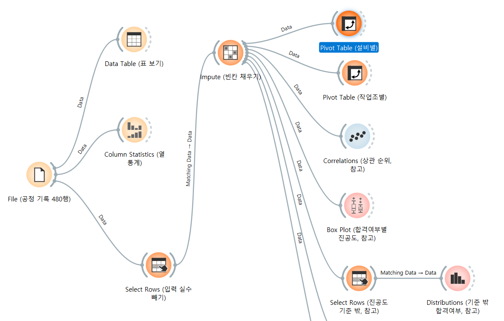
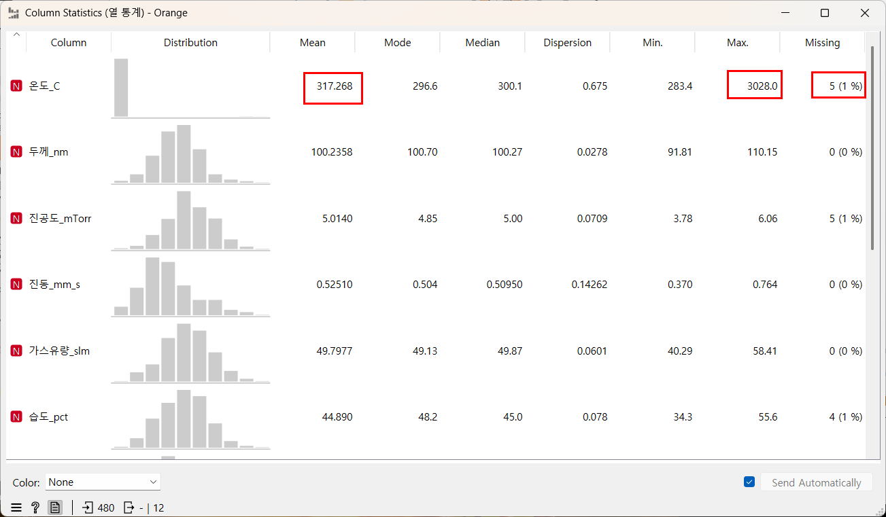
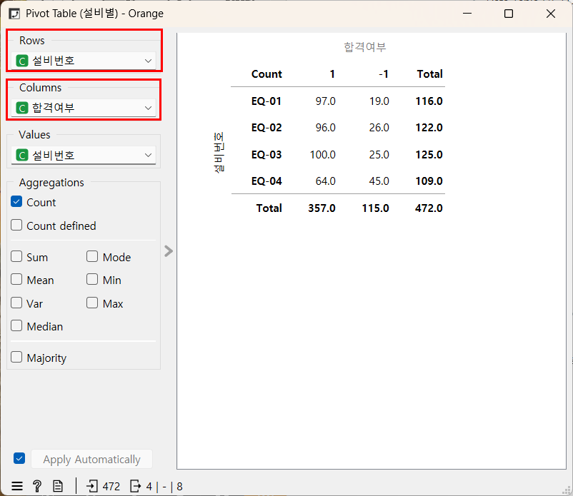
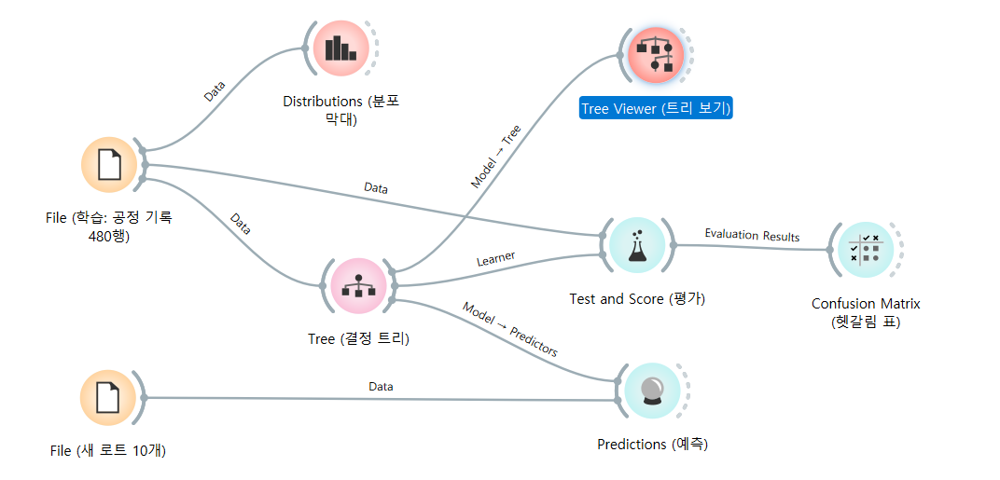

종합 실습 — AI와 Orange3로 공정 데이터 분석하기
오늘의 질문: "오늘 들어온 새 로트 10개 중 어느 것부터 점검해야 할까? 지난 기록 480건으로 근거를 찾아 보자."
오늘의 미션 — 입사 열째 날, 마지막 날이다. 팀장이 말했다. "검사 전인 새 로트 10개 중 먼저 볼 로트를 골라, 근거 숫자와 함께 세 줄로 보고해 줘요." 오늘은 이 문제 하나를 AI와 Orange3로 처음부터 끝까지 풀어 본다. 데이터 분석이 어떤 순서로 진행되는지 보는 시간이다. (신입 데이터 담당자의 10일 이야기와 공장·설비·데이터는 모두 교육용 가상이다.)

학습 목표
- 데이터 분석이 "문제 → 데이터 점검 → 비교 → 예측 → 확인 → 보고" 순서로 진행됨을 오늘 예로 설명할 수 있다.
- AI가 준 계획과 해석 초안의 숫자·원인 표현을 Orange 결과로 확인해 고칠 수 있다.
- 숫자와 비교 대상, "원인 후보", 가상 데이터 고지를 갖춘 결론 문장 3개를 쓸 수 있다.
선수 지식: 5차시 점검·정리, 7차시 Pivot Table과 합격률, 8차시 원인 후보, 9차시 Tree·기준선·헷갈림 표·Predictions. 오늘은 새 위젯도, 파이썬 코드도 없다.
왜 이걸 배워야 할까?
현장의 데이터에는 문제지가 붙어 있지 않다. 풀 문제를 정하고, 데이터를 점검하고, 숫자로 근거를 찾아 남이 읽을 문장으로 옮기는 것까지가 분석이다. AI는 계획과 문장을 빠르게 써 주지만 파일을 보지 않았으므로 숫자를 지어낼 수 있다. 그래서 숫자는 늘 Orange 화면으로 직접 확인한다.
PART 1 오늘의 문제 — 새 로트 10개 중 어느 것부터?
팀장이 준 문제
아래 10개 로트는 공정을 마쳤지만 아직 ⑦ 전기 검사(EDS) 전이다. 검사 결과가 나오기 전에 "어느 로트를 먼저 살펴볼지" 순서를 정하려 한다. 눈으로만 보면 어느 것이 위험한지 알기 어렵다.
| 로트번호 | NEW-01 | NEW-02 | NEW-03 | NEW-04 | NEW-05 | NEW-06 | NEW-07 | NEW-08 | NEW-09 | NEW-10 |
|---|---|---|---|---|---|---|---|---|---|---|
설비번호 | EQ-02 | EQ-03 | EQ-01 | EQ-01 | EQ-01 | EQ-04 | EQ-01 | EQ-02 | EQ-03 | EQ-03 |
진공도_mTorr | 4.89 | 4.89 | 5.78 | 4.96 | 5.05 | 5.30 | 5.00 | 5.24 | 4.52 | 5.13 |
진동_mm_s | 0.483 | 0.469 | 0.582 | 0.474 | 0.527 | 0.720 | 0.463 | 0.424 | 0.417 | 0.502 |
새 로트 10개 중 열 3개만 옮긴 것이다(week10_capstone_new_lots.csv, 교육용 가상 데이터). 실제 파일에는 온도·두께·가스유량·습도 등 11열이 있다.
오늘 데이터는 공정 지도의 어디일까
week10_capstone_lots.csv— 지난 4주 기록 480행 13열. 공정 지도 위치: ②~⑤ + 세정 설비 기록(센서) → ⑦ EDS 결과(합격여부: 1 = 합격, -1 = 불합격).week10_capstone_new_lots.csv— 새 로트 10행 11열. 공정 지도 위치: ②~⑤ + 세정을 마쳤고 ⑦ 검사 전이라 결과 열(불량유형·합격여부)이 없다.- 열 뜻:
설비번호(기계 EQ-01~EQ-04),작업조(근무 조 A·B·C),온도_C(섭씨 도),진공도_mTorr(챔버 안에 남은 기체의 압력, 작을수록 공기를 더 뺀 상태),진동_mm_s(설비가 떨리는 정도). 나머지는 10차시 데이터 설명서에 있다. - 연습용 기준(이 과정에서 정한 연습용 범위이며 실제 공정 규격이 아니다): 진공도 4.5~5.5 mTorr, 진동 0.64 mm/s 이하.
AI와 함께 분석하는 5단계
오늘은 AI에게 계획과 해석 초안을 받고, 그 사이의 실행과 확인은 Orange로 직접 한다.
PART 2 AI와 Orange3로 풀어 가기
다섯 단계로 푼다. 단계마다 "무엇을 했고, 화면에서 어떤 숫자를 읽었나"를 본다. 위젯은 모두 5~9차시에 써 본 것이다.
아래는 교육용 가상 데이터인 반도체 공정 기록의 설명이야. 파일은 올리지 않고 열 설명만 붙여 넣을게.
아래 문제를 풀려면 Orange3에서 어떤 위젯을 어떤 순서로 이어야 하는지 5단계 이내의 계획을 세워 줘. 위젯 이름은 Orange3 화면의 영어 이름으로 쓰고, 내가 배운 위젯(File, Data Table, Column Statistics, Select Rows, Impute, Distributions, Pivot Table, Tree, Tree Viewer, Test and Score, Confusion Matrix, Predictions) 중에서만 골라 줘.
- 지난 기록: week10_capstone_lots.csv(480행 13열), 한 행 = 로트 하나의 공정 기록과 검사 결과
- 열: 날짜, 로트번호, 설비번호(EQ-01~EQ-04), 공정명(5종), 작업조(A조·B조·C조), 온도_C(섭씨 도), 두께_nm(나노미터), 진공도_mTorr, 진동_mm_s, 가스유량_slm, 습도_pct(퍼센트), 불량유형(불합격일 때만 적힘), 합격여부(1 = 합격, -1 = 불합격)
- 새 로트: week10_capstone_new_lots.csv(10행), 같은 열에서 불량유형·합격여부만 없음(검사 전)
- 문제: 새 로트 10개 중 어느 것부터 점검해야 할까? 지난 기록에서 근거를 찾고 싶어.- File 위젯으로 week10_capstone_lots.csv를 불러옵니다.
- 이 데이터에는 빈칸이 없으므로 정리 단계 없이 바로 분석합니다.
- Pivot Table로 설비별·작업조별 합격 수를 세어 합격률을 비교합니다.
- Tree를 잇고 Test and Score로 정확도를 확인합니다.
- Tree와 새 로트 File을 Predictions에 이어, 불합격으로 예측된 로트를 찾습니다.
검색어 프롬프트 잘 쓰는 법
ChatGPT에게 데이터 분석 계획을 물을 때 프롬프트에 꼭 넣어야 할 정보(데이터 설명, 열 이름, 쓸 도구, 원하는 답의 형식)를 처음 배우는 사람에게 예시와 함께 4줄로 알려줘.week10_1_explore_start.ows를 연다. File에 Column Statistics를 이어 Missing(빈칸)·Max·Mean 칸을 본다. 읽은 숫자: 480행, 빈칸 14칸(온도_C 5 · 진공도_mTorr 5 · 습도_pct 4), 온도 최댓값 3028(평균 317.27 — 튀는 값 3건 때문으로 보인다. 300 근처 값에서 소수점이 빠진 입력 실수로 추정). File → Select Rows(온도_C · is below · 1000) → Impute(Average/Most frequent)로 정리하면 472행, 빈칸 0이 된다. 입력 실수 3행과 함께 온도가 빈 5행도 빠진다(Select Rows의 숫자 조건은 빈칸 행을 통과시키지 않는다).
설비번호 / 작업조, Columns는 합격여부다(7차시). 1 칸 ÷ Total 칸으로 합격률을 계산한다. 설비별: EQ-01 83.6% · EQ-02 78.7% · EQ-03 80.0% · EQ-04 58.7%(가장 높은 설비와 24.9%p 차이). 작업조별: A조 78.3% · B조 73.1% · C조 75.7%(차이 5.2%p). → 작업조 차이보다 설비 차이가 훨씬 크다. 가장 낮은 무리는 늘 있으니, 차이의 크기를 견준다.
week10_2_predict_start.ows를 연다. 위 File = 지난 기록 480행, 아래 File = 새 로트 10개다(9차시와 같은 흐름). 예측 캔버스는 정리하지 않은 원본 480행으로 학습한다(그래서 기준선의 분모가 480이다). Distributions 기준선(모두 합격이라고 찍었을 때) 75.8%(364 ÷ 480). Tree(깊이 4) → Tree Viewer의 첫 질문은 진공도_mTorr ≤ 4.49, 그 옆 갈래에 진공도 5.49 초과, 그 아래 진동_mm_s ≤ 0.641이다. Test and Score(Number of folds 10) CA 0.902, Confusion Matrix에서 실제 불합격 116건 중 27건을 합격으로 놓쳤다. Predictions(Show probabilities for → Classes known to the model): NEW-03 → -1(불합격 확률 1.000), NEW-06 → -1(0.562, 애매), 나머지 8개는 1. 1.000은 트리의 그 갈래에 있던 지난 기록이 거의 모두 불합격이었다는 뜻이지, 이 로트가 반드시 불합격이라는 뜻은 아니다.
아래는 교육용 가상 데이터를 Orange3로 분석해 내가 직접 읽은 숫자야. 이 숫자만 써서 팀장에게 보낼 보고를 3문장으로 써 줘. 숫자를 바꾸거나 새로 만들지 말고, 결과를 원인으로 단정하지 말고 "원인 후보"라는 표현을 써 줘.
- 문제: 새 로트 10개 중 어느 것부터 점검할까?
- 점검 뒤 지난 기록 472행의 설비별 합격률: EQ-01 83.6%, EQ-02 78.7%, EQ-03 80.0%, EQ-04 58.7%
- 작업조별 합격률(정리 뒤 472행): A조 78.3%, B조 73.1%, C조 75.7%
- 기준선(모두 합격이라고 찍었을 때, 원본 480행): 75.8%, 결정 트리 정확도(CA, 10겹, 원본 480행으로 학습): 0.902, 실제 불합격 116건 중 27건 놓침
- 불합격(-1)으로 예측된 새 로트: NEW-03(불합격 확률 1.000), NEW-06(0.562)지난 기록에서 EQ-04의 합격률이 58.7%로 가장 낮았고, 작업조별로는 B조가 73.1%로 가장 낮았습니다. B조는 야간 작업이 많아서 집중력이 떨어져 불합격이 늘어난 것이므로, B조의 근무 방식을 바꿔야 합니다. 결정 트리의 정확도는 90.2%로 높아서 이 모델은 믿을 만하며, 불합격으로 예측된 NEW-03과 NEW-06부터 점검하겠습니다(이 결과는 교육용 가상 데이터로 만든 것입니다).
0. 초안의 숫자 58.7%·73.1%·90.2%·75.8%는 Orange 화면과 같다(확인함). 프롬프트에서 "원인 후보"로 쓰라고 했는데도 단정 문장이 섞였다.
- "B조는 야간 작업이 많아서 …" — 근무 시간대는 데이터에 없는 말(AI가 지어냄)이고, 결과를 원인으로 단정했다. 작업조 차이(5.2%p)는 설비 차이(24.9%p)보다 훨씬 작다.
- "정확도는 90.2%로 높아서 믿을 만하며" — 비교 대상이 빠졌다. 기준선 75.8%보다 높지만 실제 불합격 116건 중 27건을 놓쳤다는 것도 함께 말한다.
검색어 AI 환각 숫자 검증
AI 챗봇이 그럴듯하지만 사실이 아닌 숫자나 내용을 말하는 현상(환각)이 왜 생기는지, 데이터 분석 보고서를 쓸 때 이것을 어떻게 확인하면 좋은지 처음 배우는 사람에게 3문장으로 설명해줘.PART 3 문제를 이렇게 해결했다
단계 2~4에서 읽은 숫자로 먼저 볼 로트를 정해 보자.
결론 보고 문장 3개
답: NEW-03과 NEW-06부터 점검한다. NEW-03은 진공도 5.78 mTorr로 연습용 기준(4.5~5.5) 밖이고, NEW-06은 합격률이 가장 낮았던 EQ-04에서 진동 0.720 mm/s(연습용 기준 0.64 초과)로 나왔다. 트리의 갈림길도 진공도와 진동이었다. 다만 진공도·진동은 불합격의 원인 후보일 뿐이고, 로트의 합격·불합격은 ⑦ 검사로, 진공도·진동이 실제 원인인지는 설비 점검으로 확인한다.
- 지난 기록(정리 뒤 472행)에서 EQ-04 합격률은 58.7%로 다른 설비(78.7~83.6%)보다 낮았고, 결정 트리 정확도(원본 480행으로 학습)는 90.2%로 '모두 합격' 기준선 75.8%(364 ÷ 480)보다 높았다(불합격 116건 중 27건은 놓쳤다).
- 새 로트 중 NEW-03(진공도 5.78 mTorr, 연습용 기준 4.5~5.5 밖)과 NEW-06(EQ-04, 진동 0.720 mm/s, 연습용 기준 0.64 초과, 불합격 확률 0.562로 애매)을 먼저 점검한다. 트리도 진공도(≤ 4.49)와 진동(≤ 0.641)으로 나눴으므로 진공도와 진동(진동이 큰 설비 EQ-04도 함께)은 불합격의 원인 후보이며, 로트의 합격·불합격은 ⑦ 검사로, 진공도·진동이 실제 원인인지는 설비 점검으로 확인한다.
- 이 결과는 교육용 가상 데이터로 연습한 것이며, 설비와 공정의 짝은 단순화한 것이다.
오늘 분석 한눈에 보기
| 단계 | 쓴 도구 | 확인한 숫자 | 배운 차시 |
|---|---|---|---|
| 단계 1 계획 묻기 | ChatGPT | "빈칸 없음" → 점검부터로 고침 | 9차시 |
| 단계 2 점검과 정리 | Column Statistics, Select Rows, Impute | 빈칸 14칸, 온도 3028, 480 → 472행 | 5차시 |
| 단계 3 지난 기록 비교 | Pivot Table | EQ-04 58.7%, 설비 차이 24.9%p > 작업조 5.2%p | 7차시 |
| 단계 4 예측 | Distributions, Tree, Test and Score, Confusion Matrix, Predictions | 기준선 75.8%, CA 0.902, 놓친 27건, NEW-03·NEW-06 | 9차시 |
| 단계 5 확인하고 고치기 | ChatGPT + Orange 화면 | 기준선 누락 보충, "B조 야간 탓" 삭제(데이터에 없는 말, 작업조 차이 5.2%p는 근거 약함) | 8·9차시 |
데이터 분석은 이런 일이다 — 문제를 정하고, 데이터를 점검하고, 비교하고, 예측하고, 확인한 숫자로 보고한다. AI는 빠른 조수이고, 숫자를 확인하는 사람은 나다.
검색어 상관관계 인과관계 차이 예시
공장 기록에서 어떤 설비의 불합격이 많고 그 설비의 진동 값도 컸다면, 이것만으로 "진동이 불합격의 원인"이라고 말할 수 없는 이유를 데이터 분석을 처음 배우는 사람에게 3문장으로 설명해줘. "원인 후보"를 확인하려면 현장에서 무엇을 더 보면 좋을지도 알려줘.핵심 용어 카드
프롬프트
- 한 줄 설명
- AI에게 주는 요청 문장. 데이터 설명·열 이름·쓸 도구·원하는 형식을 함께 적는다.
- 쉬운 비유
- 택배 송장 — 주소가 자세할수록 엉뚱한 곳으로 가지 않는다.
- 데이터에서의 예
- "교육용 가상 데이터", 열 13개 설명, "배운 위젯 중에서만", "5단계 이내"
- 자주 하는 오해
- "원인 후보로 써 줘"라고 적으면 AI가 꼭 지킨다고 생각한다. 그래도 단정 문장이 섞일 수 있다.
AI가 지어낸 숫자
- 한 줄 설명
- AI가 그럴듯하지만 데이터에 없는 숫자나 사실을 말하는 것. 흔히 "환각"이라고 부른다.
- 쉬운 비유
- 답을 모르는데 자신 있게 말하는 친구.
- 데이터에서의 예
- 파일을 보지 않고 말한 "빈칸 없음", 열에 없는 "야간 작업" 이야기
- 자주 하는 오해
- 말투가 자신 있으면 맞는 숫자라고 생각한다. 숫자는 Orange 화면으로 하나씩 확인한다.
원인 후보
- 한 줄 설명
- 결과와 함께 나타나서 원인일 수도 있지만, 데이터만으로는 확정할 수 없는 값.
- 쉬운 비유
- 용의자 — 범인일 수 있지만, 확인 전까지는 범인이 아니다.
- 데이터에서의 예
- 합격률이 낮은 설비 EQ-04, 트리 갈림길에 나온 진공도·진동
- 자주 하는 오해
- 모델이 갈림길에 쓴 열이면 원인이라고 생각한다. 함께 나타났다는 뜻까지다.
주의할 점 & 자주 발생하는 오류
불량유형의 빈칸은 합격 로트라 비어 있는 것이 정상이다. 결과 정리 & 퀴즈
- 설비 차이와 센서 값(진공도·진동)을 함께 보면 원인 후보를 좁힐 수 있다. 하지만 합격률이 낮은 설비에서 진동도 컸다면, 이 기록만으로는 어느 쪽인지 가를 수 없다 — 확정은 현장 확인으로 한다.
- 예측은 ⑦ EDS 검사 전에 어느 로트를 먼저 볼지 정하는 참고다. 예측이 -1이어도 불합격이 확정된 것은 아니고, ⑦ 검사는 그대로 한다.
복습 문제 전체는 quiz.json(수업 후 자율 복습)에 있다. 아래는 그중 일부다.
과정을 마치며
신입 데이터 담당자의 10일이 끝났다. 공장 기록 40건을 손으로 세던 첫날부터, 새 로트 중 먼저 볼 로트를 숫자로 골라 보고한 오늘까지의 큰 줄기다.
| 차시 | 큰 줄기 | 한 문장 |
|---|---|---|
| 1 | 기록 | 공장 기록표 40건의 합격·불합격을 변수와 f-string으로 한 문장에 담았다. |
| 2 | 기록 | 설비 온도 여러 개를 리스트에, 이름표 붙은 값을 딕셔너리에 담았다. |
| 3 | 기록 | if·for·함수로 연습용 기준 판정을 컴퓨터에 맡겼다. |
| 4 | 표 | Pandas로 CSV를 표로 읽고, 조건으로 필요한 행만 골랐다. |
| 5 | 정리 | 빈칸·중복·튀는 값을 정리하고, 채우기 전에 튀는 값부터 확인했다. |
| 6 | 그림 | 그래프와 웨이퍼 맵으로 표에서 안 보이던 모양을 봤다. |
| 7 | 비교 | 설비별로 묶어 합격률과 불량 유형을 비교했다. |
| 8 | 원인 후보 | 상관계수와 범위 밖 비교로 원인 후보를 골랐다. |
| 9 | 예측 | 결정 트리로 새 로트의 합격·불합격을 미리 맞히고, 기준선과 함께 읽고, AI 보고서의 숫자와 표현을 검증했다. |
| 10 | 종합 | 새 로트 10개 중 먼저 볼 로트를 AI와 Orange3로 골라, 확인한 숫자로 결론 문장을 썼다. |